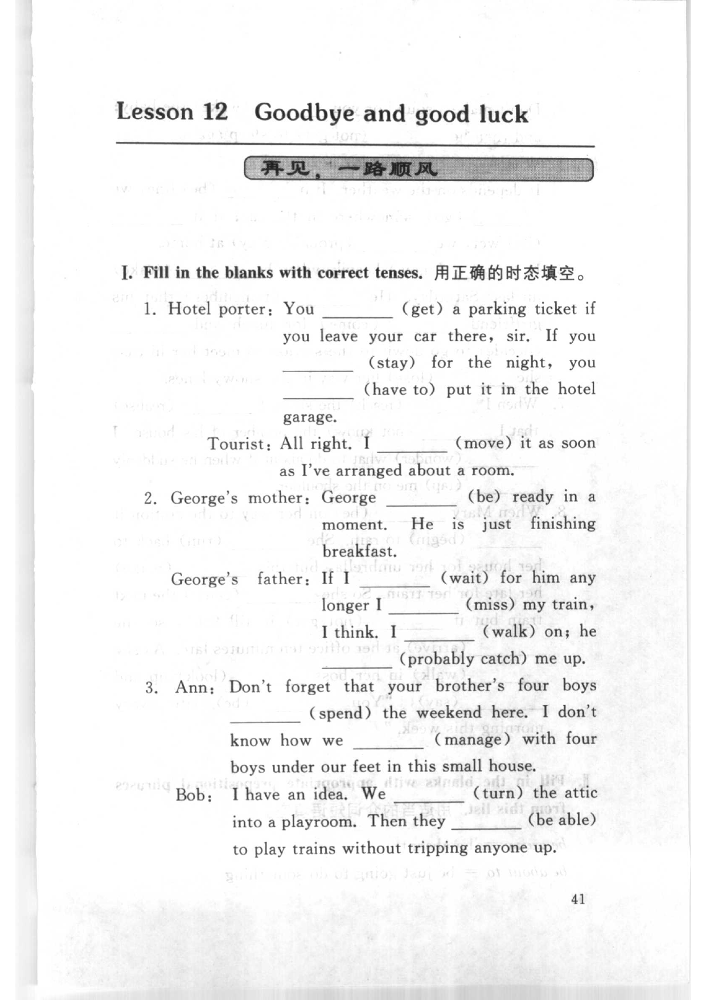
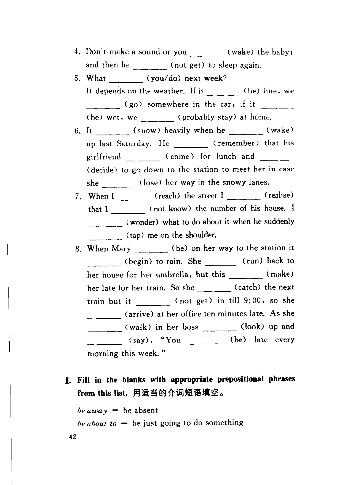
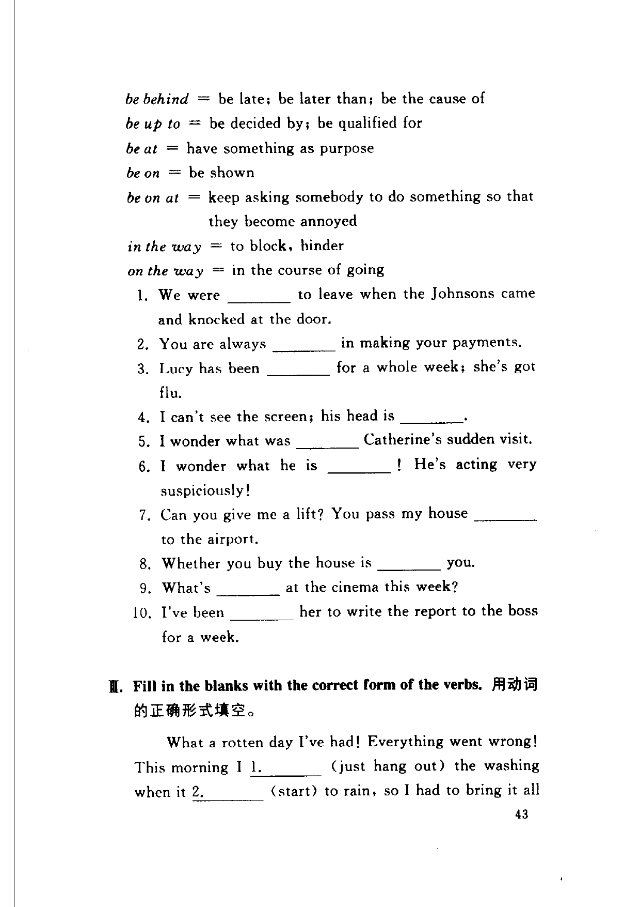
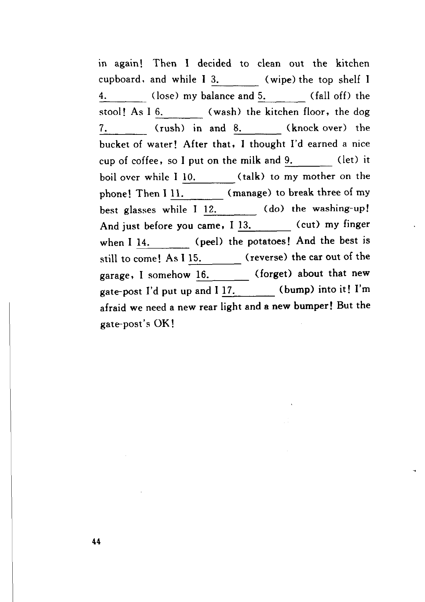

Grammar exercises · 语法练习
I. Fill in the blanks with correct tenses.
用正确的时态填空。
-
I. Tenses — Hotel porter: You (get) a parking ticket if you leave your car there, sir. If you (stay) for the night, you (have to) put it in the hotel garage.
Tourist: All right. I (move) it as soon as I've arranged about a room. -
I. Tenses — George's mother: George (be) ready in a moment. He is just finishing breakfast.
George's father: If I (wait) for him any longer I (miss) my train, I think. I (walk) on; he (probably catch) me up. -
I. Tenses — Ann: Don't forget that your brother's four boys (spend) the weekend here. I don't know how we (manage) with four boys under our feet in this small house.
Bob: I have an idea. We (turn) the attic into a playroom. Then they (be able) to play trains without tripping anyone up. -
I. Tenses — Don't make a sound or you (wake) the baby; and then he (not get) to sleep again.
-
I. Tenses — What (you/do) next week? It depends on the weather. If it (be) fine, we (go) somewhere in the car; if it (be) wet, we (probably stay) at home.
-
I. Tenses — It (snow) heavily when he (wake) up last Saturday. He (remember) that his girlfriend (come) for lunch and (decide) to go down to the station to meet her in case she (lose) her way in the snowy lanes.
-
I. Tenses — When I (reach) the street I (realise) that I (not know) the number of his house. I (wonder) what to do about it when he suddenly (tap) me on the shoulder.
-
I. Tenses — When Mary (be) on her way to the station it (begin) to rain. She (run) back to her house for her umbrella, but this (make) her late for her train. So she (catch) the next train but it (not get) in till 9:00, so she (arrive) at her office ten minutes late. As she (walk) in her boss (look) up and (say), "You (be) late every morning this week."
II. Fill in the blanks with appropriate prepositional phrases from this list.
用适当的介词短语填空。
be away = be absent
be about to = be just going to do something
be behind = be late; be later than; be the cause of
be up to = be decided by; be qualified for
be at = have something as purpose
be on = be shown
be on at = keep asking somebody to do something so that they become annoyed
in the way = to block, hinder
on the way = in the course of going
-
II. Prepositional phrases — We were to leave when the Johnsons came and knocked at the door.
-
II. Prepositional phrases — You are always in making your payments.
-
II. Prepositional phrases — Lucy has been for a whole week; she's got flu.
-
II. Prepositional phrases — I can't see the screen; his head is .
-
II. Prepositional phrases — I wonder what was Catherine's sudden visit.
-
II. Prepositional phrases — I wonder what he is ! He's acting very suspiciously!
-
II. Prepositional phrases — Can you give me a lift? You pass my house to the airport.
-
II. Prepositional phrases — Whether you buy the house is you.
-
II. Prepositional phrases — What's at the cinema this week?
-
II. Prepositional phrases — I've been her to write the report to the boss for a week.
III. Fill in the blanks with the correct form of the verbs.
用动词的正确形式填空。
-
III. Verb forms — What a rotten day I've had! Everything went wrong! This morning I 1. (just hang out) the washing when it 2. (start) to rain, so I had to bring it all in again! Then I decided to clean out the kitchen cupboard, and while I 3. (wipe) the top shelf I 4. (lose) my balance and 5. (fall off) the stool! As I 6. (wash) the kitchen floor, the dog 7. (rush) in and 8. (knock over) the bucket of water! After that, I thought I'd earned a nice cup of coffee, so I put on the milk and 9. (let) it boil over while I 10. (talk) to my mother on the phone! Then I 11. (manage) to break three of my best glasses while I 12. (do) the washing-up! And just before you came, I 13. (cut) my finger when I 14. (peel) the potatoes! And the best is still to come! As I 15. (reverse) the car out of the garage, I somehow 16. (forget) about that new gate-post I'd put up and I 17. (bump) into it! I'm afraid we need a new rear light and a new bumper! But the gate-post's OK!
Original images · 原图对照
Expand a page to compare it with the transcription. Open the original in a new tab to zoom in.
展开原图核对文字，也可以在新标签页打开原图放大查看。
Book page 1 · Exercise I (tenses, items 1–3)
Open original · 打开原图 ↗ Download original · 下载原图


Book page 2 · Exercise I (items 4–8) and Exercise II (word list start)
Open original · 打开原图 ↗ Download original · 下载原图


Book page 3 · Exercise II (items 1–10) and Exercise III (item 1 start)
Open original · 打开原图 ↗ Download original · 下载原图


Book page 4 · Exercise III (item 1 continued)
Open original · 打开原图 ↗ Download original · 下载原图


Your notes and answers
Use this space for longer responses or exercises that do not have an individual answer box.